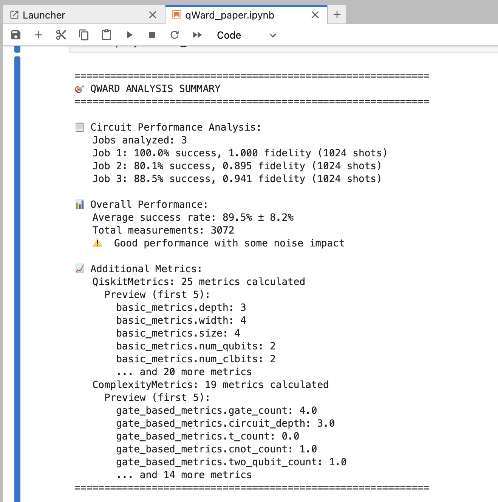

qWard
A Unified Toolkit for Pre- and Post-Runtime Quantum Circuit Metrics
Cristian Marquez, Daniel Sierra, Kelly Garcés
Universidad de los Andes de Colombia & The Catholic University of America
The Quantum Promise
Potential to Revolutionize Computing
Quantum Mechanics
Exponential speedup
Drug Discovery
Molecular simulation
Cryptography
Quantum-safe systems
Optimization
Complex problems
The Reality: NISQ Era Challenges
Quantum Computing is Still Maturing
Noise & High Error Rates
Fragile quantum states limit circuit depth
High Cost of Execution
Expensive hardware access
Limited Hardware Access
Few processors, long queue times
The Quantum Programming Journey
Challenges Developers Face at Every Stage
Design
How complex will my circuit be?
Implement
What resources do I need?
Execute
How much will it cost? Can it run?
Analyze
Did it work correctly?
Developers need metrics and tools to answer these questions.
A Practical Example: The Bell State Circuit
What is a Bell State?
Creates a maximally entangled state between two qubits:
(|00⟩ + |11⟩) / √2
Pre-runtime Metrics
⏱️ Pre-runtime Metrics
Analyzed before execution (static analysis)
| Metric | Value |
|---|---|
| Circuit Depth | 3 |
| Number of Qubits | 2 |
| Classical Bits | 2 |
| Gate Count | 4 |
| CNOT Count | 1 |
| T-Gate Count | 0 |
| Two-Qubit Gates | 1 |
Post-runtime Metrics
✅ Post-runtime Metrics
Measured after execution on hardware/simulator
| Metric | Value |
|---|---|
| Jobs Analyzed | 3 |
| Total Measurements | 3,072 |
| Avg. Success Rate | 89.5% ± 8.2% |
| Job 1 Success | 100.0% (fidelity: 1.000) |
| Job 2 Success | 80.1% (fidelity: 0.895) |
| Job 3 Success | 88.5% (fidelity: 0.941) |
⚠️ Good performance with some noise impact
The Problem: Our Research Questions
What We Need to Understand
RQ1: SDK Support for Metrics
To what extent do existing QC SDKs facilitate the collection of pre- and the calculation of post-runtime metrics?
RQ2: Emerging Metrics Integration
Do QC SDKs effectively incorporate emerging metrics as reported in the literature?
RQ3: Library Design
How can a library be designed to address the need to collect and analyze a wide spectrum of quantum circuit metrics?
These questions guide our development of qWard!
Our Approach
Design Science Research (DSR) Methodology
Literature Review
SDK Analysis
Experimentation (qWard)
Now let's see what we found...
Answering Our Questions
RQ1: Do existing SDKs facilitate metric collection?
Answer: Insufficiently. They offer only basic support.
Answering Our Questions
RQ2: Do SDKs incorporate emerging metrics from literature?
Answer: Evidently, no.
Answering Our Questions
RQ3: How can a library address these gaps?
Answer: qWard.
Introducing qWard: Our Solution
Calculate
Comprehensive pre- and post-runtime metrics
Visualize
Transform data into actionable insights
Built for Qiskit SDK
Data-driven quantum development
qWard Architecture: Metrics Calculation

qWard Architecture: Visualization

qWard in Action: A Practical Example
Bell State Circuit
Using qWard to analyze it.
Pre-runtime
Complexity & resources
Post-runtime
Performance & fidelity
Let's see the results...
Results: Pre-runtime Metrics
Results: Post-runtime Metrics - Success Rate
AER Simulator

IBM

Conclusion & Future Work
Summary of Contributions
- Identified critical gap in quantum SDKs
- Developed qWard - open-source solution
- Unified pre- and post-runtime analysis
- Demonstrated actionable insights
Conclusion & Future Work
What's Next for qWard?
- Expand metrics - community contributions
- Multi-SDK support - PennyLane, Q#
- Predictive models - pre → post correlations
Thank You!
Questions?
GitHub: xthecapx/qiskit-qward
PyPI: qiskit-qward